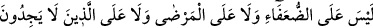

gerçekten özür sahibi oldukları için özür ileri sürmüşlerdir. Kâmûs (müellifinin) şu
sözü de buna delalet etmektedir: “el-Muazzirûn”; özür beyan eden, gerçekten de özür
sahibi olan kimselerdir. “el-Muazzir” bazen hakikati söylemeyen kimse de olabilir. Bu
takdirde mânâ: Özürsüz olarak tembel davranan ve gevşeklik gösterenler, şeklinde
olur.”
Ben derim ki: Her hâl ü kârda onların münâfık oldukları ispat edilemez. Çünkü,
gevşeklik ve tembellikten dolayı özür beyan eden kimse her ne kadar kötülenip yerilse
de, kâfir olmaz. Bu konuda müfessirler birbiriyle çelişkili şeyler söylemişlerdir. Sana
düşen, âyetin yapısına sıkı tutunup ondan çıkan mânâyı almaktır.
“Allah ve Rasûlüne yalan söyleyenler de oturdular.” Bunlar, bedevîlerin
münâfıklarıdır. Ne Peygamber Efendimiz’in Tebük seferine çıkma çağrısına icabet
etmişler, ne özür beyan etmişler, ne de gitmemek için izin istemişlerdi. Böylece onların,
îman ve itaat iddialarında Allah’a ve Rasûlü’ne yalan söyledikleri ortaya çıkmıştı.
İnsânü’l-uyûn’da denilir ki: “Özür bahâne edenler geldiler.” ifadesinde sözü
edilenler, zayıf ve fakir bedevilerdi. Savaşa katılmama konusunda kendilerine izin
vermesi için Peygamber Efendimiz’e müracat etmişler, Peygamber Efendimiz de onlara
izin vermişti. Bunlar seksen iki kişiydi. Geriye kalan bedevî münâfıklar ise özürsüz
olarak, gerekçe ortaya koymadan ve Allah’a ve Rasûlü’ne karşı cür’et göstererek
savaşa çıkmayıp oturdukları yerde oturdular. İşte Allah Teâlâ: “Allah’a ve Rasûlü’ne
yalan söyleyenler de oturdular.” sözü ile bunları kasdetmiştir.”
“Onlardan inkar edenlere” dünyada öldürülmek ve esir edilmek suretiyle, âhirette
ise cehennem ateşi ile “acı bir azâb erişecektir.” “Onlardan” zamiri ile ya bedeviler ya
da özür bahane edenler kastedilmektedir. “Onlardan” buyurulması, bedevîlerin
tamamının kâfir olmaması sebebiyledir. Bedevîlerin bir kısmının ileride iman
edeceğini, özür beyan edenlerin bir kısmının da küfründen dolayı değil tembelliğinden
dolayı özür beyan etmekte olduğunu Allah biliyordu.
et-Te’vîlâtü’n-Necmiyye’de denilir ki: İnsanlar üç tabakadır:
1. Özür beyan edenlerdir. Bunlar (Allah’ın ve Rasûlünün) emirlerini yerine getirmede
kusurlu davranan, kusurlarını ve günahlarını îtiraf eden, günahlarından tevbe eden ve bu
sayede de rahmet ve mağfirete kavuşanlardır.
2. Oturanlardır. Bunlar Allah’a ve Rasûlü’ne inanmayan, devamlı surette yalan
söyleyen kâfir ve münâfıklardır. Bunlar, terk edilmişliği ve acı veren azabı kendilerine
gerekli kılanlardır. Nitekim Allah Teâlâ onlar hakkında: “Allah ve Rasûlü’ne yalan
söyleyenler de oturdular.” buyurmuştur.
3. İhlaslı, doğru sözlü ve samîmî müminlerdir. Fakat bunlar içerisinde savaşa
gitmemek için mazeret sahibi olanlar vardır ki bir sonraki âyet onlara işaret etmektedir.